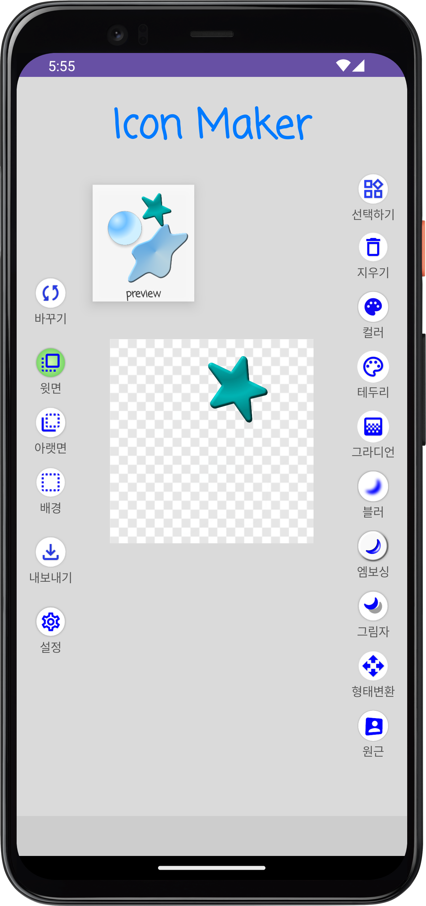

아이콘 메이커 사용법

🎨 색상 아이콘
색상 아이콘을 누르면 색상 선택 패널이 열리며, 단색, 그라디언트, 최근 색상 등을 고를 수 있습니다.
✏️ 테두리 아이콘
테두리 아이콘은 아이콘의 외곽선을 설정합니다. 선 색상, 굵기, 점선 등을 설정할 수 있습니다.
🌫️ 그림자 아이콘
그림자 아이콘을 선택하면 그림자 색상, 위치, 흐림 정도를 설정할 수 있습니다.